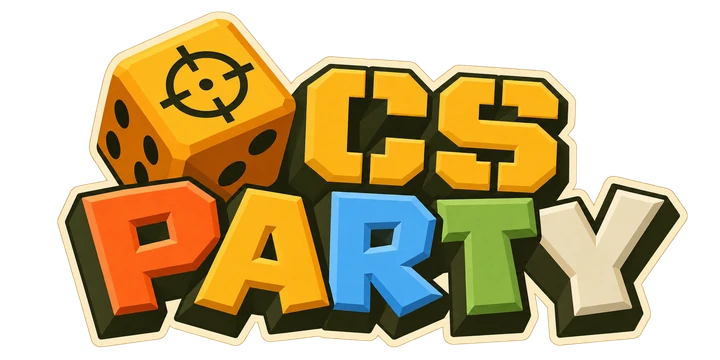

MARIO PARTY RULES. COUNTER-STRIKE EVERYTHING.
Roll. Move. Win the minigames.
A board game played inside Counter-Strike 1.6. Up to 4 players, free, and it runs right in this tab.
- Roll jump into the crate to roll your die
- Move land on spaces for money, items and stars
- Fight win the minigame after every round
- Keyboard + mouse, phone or controller
- 47 MB download, first visit only
- No account, nothing to install
On a phone: play in landscape. Left thumb moves, Jump picks and rolls. A Bluetooth controller works too. Add this page to your home screen for full screen.